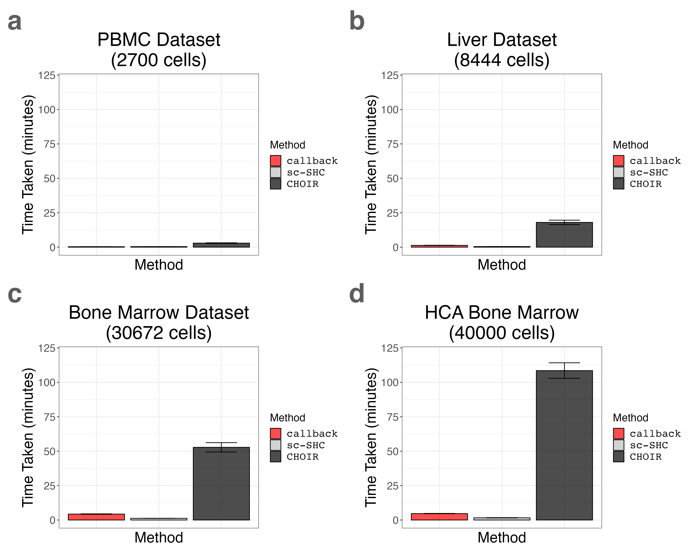
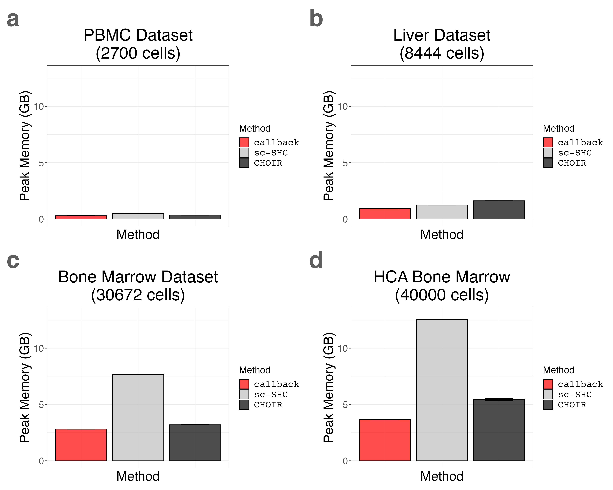

8. Plotting Runtime and Peak Memory Usage for Multiple Tissues (Supplemental Figures S26 and S27)
8_seurat_data_and_liver_timing.Rmd
suppressPackageStartupMessages({
library(callbackreproducibility)
library(dplyr)
library(ggplot2)
library(patchwork)
})We load the liver benchmarking data.
liver_timing_df1 <- read.csv("liver_timing1.csv", header = TRUE, row.names = 1)
liver_timing_df2 <- read.csv("liver_timing2.csv", header = TRUE, row.names = 1)
liver_timing_df3 <- read.csv("liver_timing3.csv", header = TRUE, row.names = 1)
liver_timing_df4 <- read.csv("liver_timing4.csv", header = TRUE, row.names = 1)
liver_timing_df5 <- read.csv("liver_timing5.csv", header = TRUE, row.names = 1)
liver_timing_df <- rbind(liver_timing_df1, liver_timing_df2, liver_timing_df3, liver_timing_df4, liver_timing_df5)
liver_timing_df$method <- factor(liver_timing_df$method, levels = c("callback", "sc-SHC", "CHOIR"))We plot the liver benchmarking data.
liver_timing_bar_plot <- timing_barplot(liver_timing_df, title = "Liver Dataset\n(8444 cells)")
liver_memory_bar_plot <- memory_barplot(liver_timing_df, title = "Liver Dataset\n(8444 cells)")We load the PBMC 3K benchmarking data.
pbmc3k_timing_df1 <- read.csv("pbmc3k_timing1.csv", header = TRUE, row.names = 1)
pbmc3k_timing_df2 <- read.csv("pbmc3k_timing2.csv", header = TRUE, row.names = 1)
pbmc3k_timing_df3 <- read.csv("pbmc3k_timing3.csv", header = TRUE, row.names = 1)
pbmc3k_timing_df4 <- read.csv("pbmc3k_timing4.csv", header = TRUE, row.names = 1)
pbmc3k_timing_df5 <- read.csv("pbmc3k_timing5.csv", header = TRUE, row.names = 1)
pbmc3k_timing_df <- rbind(pbmc3k_timing_df1, pbmc3k_timing_df2, pbmc3k_timing_df3, pbmc3k_timing_df4, pbmc3k_timing_df5)
pbmc3k_timing_df$method <- factor(pbmc3k_timing_df$method, levels = c("callback", "sc-SHC", "CHOIR"))We plot the PBMC 3K benchmarking data.
pbmc3k_timing_bar_plot <- timing_barplot(pbmc3k_timing_df, title = "PBMC Dataset\n(2700 cells)")
pbmc3k_memory_bar_plot <- memory_barplot(pbmc3k_timing_df, title = "PBMC Dataset\n(2700 cells)")We load the Bone Marrow 30K benchmarking data.
bmcite_timing_df1 <- read.csv("bmcite_timing1.csv", header = TRUE, row.names = 1)
bmcite_timing_df2 <- read.csv("bmcite_timing2.csv", header = TRUE, row.names = 1)
bmcite_timing_df3 <- read.csv("bmcite_timing3.csv", header = TRUE, row.names = 1)
bmcite_timing_df4 <- read.csv("bmcite_timing4.csv", header = TRUE, row.names = 1)
bmcite_timing_df5 <- read.csv("bmcite_timing5.csv", header = TRUE, row.names = 1)
bmcite_timing_df <- rbind(bmcite_timing_df1, bmcite_timing_df2, bmcite_timing_df3, bmcite_timing_df4, bmcite_timing_df5)
bmcite_timing_df$method <- factor(bmcite_timing_df$method, levels = c("callback", "sc-SHC", "CHOIR"))We plot the Bone Marrow 30K benchmarking data.
bmcite_timing_bar_plot <- timing_barplot(bmcite_timing_df, title = "Bone Marrow Dataset\n(30672 cells)")
bmcite_memory_bar_plot <- memory_barplot(bmcite_timing_df, title = "Bone Marrow Dataset\n(30672 cells)")We load the Bone Marrow 40K benchmarking data.
hcabm40k_timing_df1 <- read.csv("hcabm40k_timing1.csv", header = TRUE, row.names = 1)
hcabm40k_timing_df2 <- read.csv("hcabm40k_timing2.csv", header = TRUE, row.names = 1)
hcabm40k_timing_df3 <- read.csv("hcabm40k_timing3.csv", header = TRUE, row.names = 1)
hcabm40k_timing_df4 <- read.csv("hcabm40k_timing4.csv", header = TRUE, row.names = 1)
hcabm40k_timing_df5 <- read.csv("hcabm40k_timing5.csv", header = TRUE, row.names = 1)
hcabm40k_timing_df <- rbind(hcabm40k_timing_df1, hcabm40k_timing_df2, hcabm40k_timing_df3, hcabm40k_timing_df4, hcabm40k_timing_df5)
hcabm40k_timing_df$method <- factor(hcabm40k_timing_df$method, levels = c("callback", "sc-SHC", "CHOIR"))We plot the Bone Marrow 30K benchmarking data.
hcabm40k_timing_bar_plot <- timing_barplot(hcabm40k_timing_df, title = "HCA Bone Marrow\n(40000 cells)")
hcabm40k_memory_bar_plot <- memory_barplot(hcabm40k_timing_df, title = "HCA Bone Marrow\n(40000 cells)")We create a grid of barplots for both runtime and peak memory usage.
timing_grid <- pbmc3k_timing_bar_plot +
liver_timing_bar_plot +
bmcite_timing_bar_plot +
hcabm40k_timing_bar_plot +
plot_annotation(tag_levels = 'a') &
theme(plot.tag = element_text(size = 40, face = "bold", color = "#5D5E5D"))
memory_grid <- pbmc3k_memory_bar_plot +
liver_memory_bar_plot +
bmcite_memory_bar_plot +
hcabm40k_memory_bar_plot +
plot_annotation(tag_levels = 'a') &
theme(plot.tag = element_text(size = 40, face = "bold", color = "#5D5E5D"))Finally, we save the plots.
ggplot2::ggsave("multi_dataset_timing.png", timing_grid, width = 1.5 * 2 * 1440, height = 1.2 * 2 * 1440, units = "px")
ggplot2::ggsave("multi_dataset_memory.png", memory_grid, width = 1.5 * 2 * 1440, height = 1.2 * 2 * 1440, units = "px")